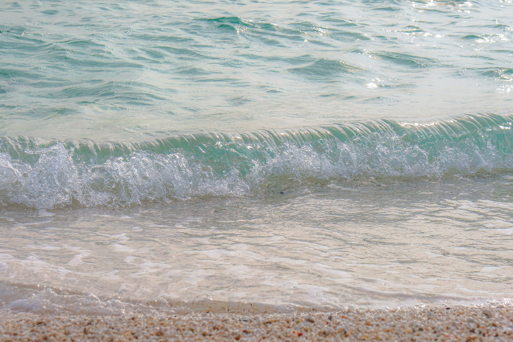

함덕해수욕장 은 제주 제주시 조천읍에 있는, 제주도의 북쪽에 위치한 해변이다. 예쁘고 감성있는 카페들과, 맛있는 먹거리들, 그리고 아기자기한 서점과 기념품샵 들이 있는 곳으로, 많은 관광객들에게 인기있는 장소이다. 넓은 해변에서 해수욕을 즐기는 사람들과 잔디밭에서 피크닉을 하는 사람들이 많이 있다.

제주시에서 동쪽으로 14 km 떨어져 있다. 물이 맑고 수심이 얕아 가족단위 피서지로 알맞으며 국민관광지로 지정되어 있다. 본래 바다였던 곳이 바다가 얕아지면서 10~15 m의 패사층이 넓게 이루어졌다. 동쪽에는 나지막하고 완만한 서우산 (犀牛山:111 m)이 있고, 서쪽 신흥리(新興里) 해변에는 연북정(戀北亭:지방유형문화재 8)이 위치한다.